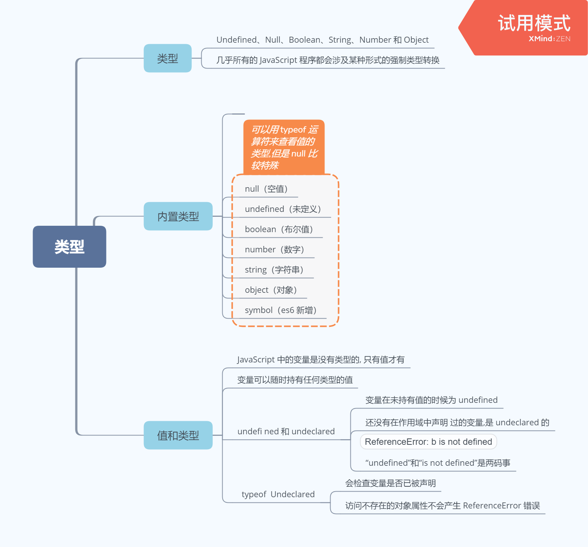
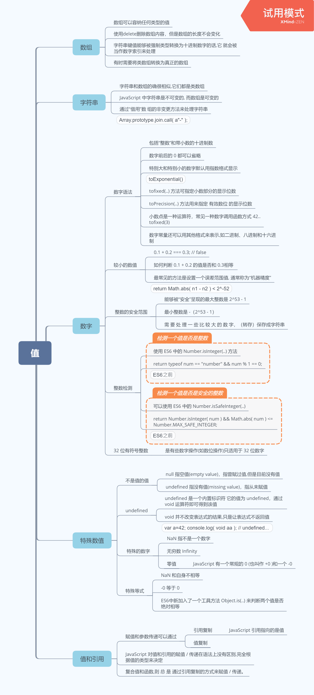
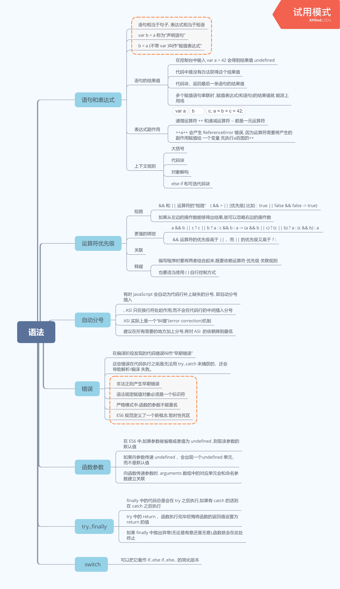
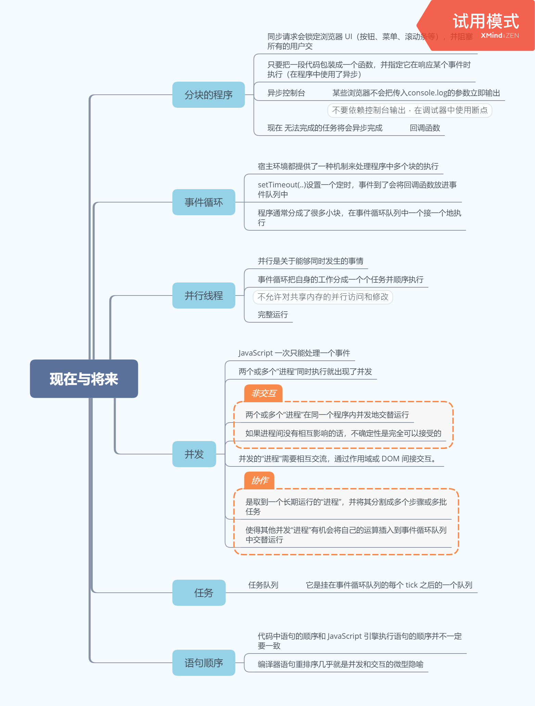
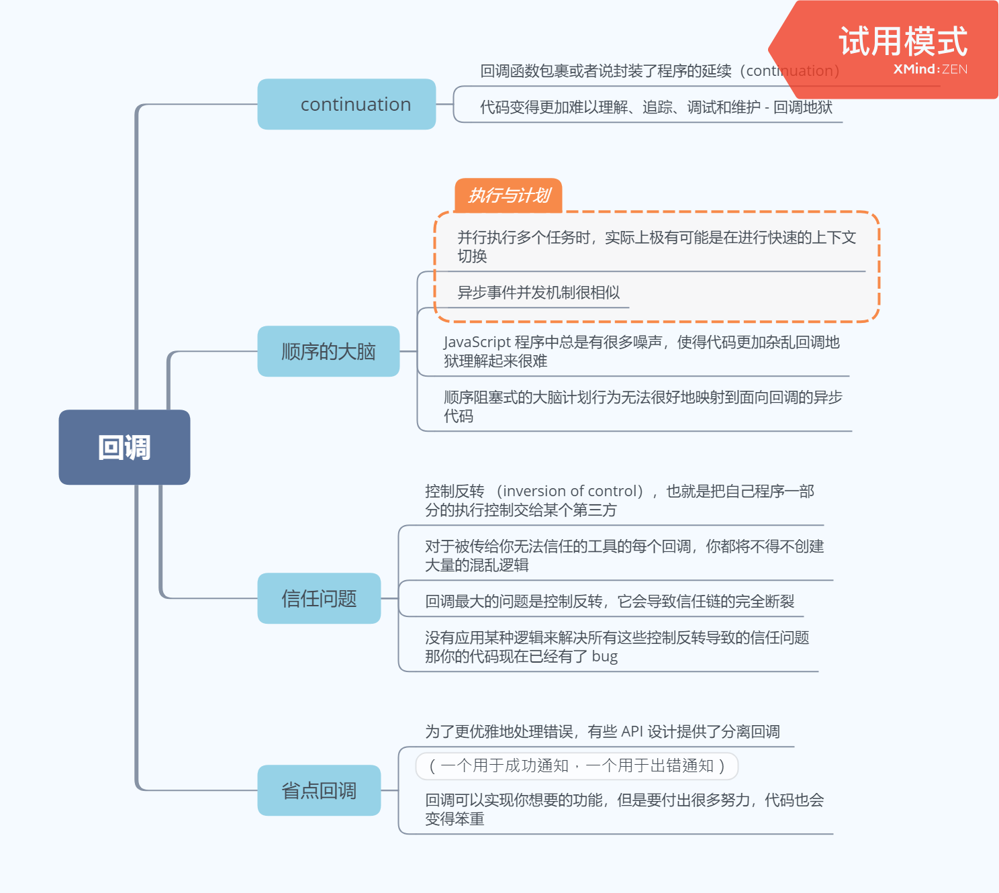

第一部分 类型和语法
第一章 - 类型
归纳
JavaScript 有 七 种 内 置 类 型： null 、 undefined 、 boolean 、 number 、 string 、 object 和
symbol ，可以使用 typeof 运算符来查看。
变量没有类型，但它们持有的值有类型。类型定义了值的行为特征。
很多开发人员将 undefined 和 undeclared 混为一谈，但在 JavaScript 中它们是两码事。
undefined 是值的一种。undeclared 则表示变量还没有被声明过。
遗憾的是，JavaScript 却将它们混为一谈，在我们试图访问 “undeclared” 变量时这样报错：ReferenceError: a is not defined，并且 typeof 对 undefined 和 undeclared 变量都返回”undefined” 。
然而，通过 typeof 的安全防范机制（阻止报错）来检查 undeclared 变量，有时是个不错的办法。
思维导图

第二章 - 值
归纳
JavaScript 中的数组是通过数字索引的一组任意类型的值。字符串和数组类似，但是它们的行为特征不同，在将字符作为数组来处理时需要特别小心。JavaScript 中的数字包括“整数”和“浮点型”。
基本类型中定义了几个特殊的值。
null 类型只有一个值 null ， undefined 类型也只有一个值 undefined 。所有变量在赋值之前默认值都是 undefined 。 void 运算符返回 undefined 。
数 字 类 型 有 几 个 特 殊 值， 包 括 NaN （ 意 指“not a number”， 更 确 切 地 说 是“invalidnumber”）、 +Infinity 、 -Infinity 和 -0 。
简单标量基本类型值（字符串和数字等）通过值复制来赋值 / 传递，而复合值（对象等）通过引用复制来赋值 / 传递。JavaScript 中的引用和其他语言中的引用 / 指针不同，它们不能指向别的变量 / 引用，只能指向值。
思维导图

第三章 - 原生函数
归纳
JavaScript 为基本数据类型值提供了封装对象，称为原生函数（如 String 、 Number 、 Boolean等）。它们为基本数据类型值提供了该子类型所特有的方法和属性（如： String.protoytpe.trim() 和Array.protoytpe.concat(..) ）。
对于简单标量基本类型值，比如 “abc” ，如果要访问它的 length 属性或 String.prototype方法，JavaScript 引擎会自动对该值进行封装（即用相应类型的封装对象来包装它）来实现对这些属性和方法的访问。
思维导图

第四章 - 强制类型转换
归纳
本章介绍了 JavaScript 的数据类型之间的转换，即强制类型转换：包括显式和隐式。
强制类型转换常常为人诟病，但实际上很多时候它们是非常有用的。作为有使命感的
JavaScript 开发人员，我们有必要深入了解强制类型转换，这样就能取其精华，去其糟粕。
显式强制类型转换明确告诉我们哪里发生了类型转换，有助于提高代码可读性和可维
护性。
隐式强制类型转换则没有那么明显，是其他操作的副作用。感觉上好像是显式强制类型转换的反面，实际上隐式强制类型转换也有助于提高代码的可读性。
在处理强制类型转换的时候要十分小心，尤其是隐式强制类型转换。在编码的时候，要知其然，还要知其所以然，并努力让代码清晰易读。
思维导图

第五章 - 语法
思维导图

反思认知
关于类型, 在(上)已经做出反思理解。
- undefined 和 undeclared
- undefined 是值的一种。
- undeclared 则表示变量还没有被声明过。报错:
ReferenceError: a is not defined - 通过 typeof 的安全防范机制（阻止报错）来检查 undeclared 变量，有时是个不错的办法。结果也是
undefined。
- 整数检测：
1 | // <!-- ES6 --> |
- 一个值是否是安全的整数
1 | // <!-- es6 --> |
- 强烈建议使用常量形式(如 /^a*b+/g )来定义正则表达式,这样不仅语法简单,执行效率也更高,因为 JavaScript 引擎在代码执行前会对它们进行预编译和缓存。RegExp(..) 有时还是很有用的,比如动态定义正则表达式时:
1 | var name = "Kyle"; |
- 使用 Date.now() 来获得当前的时间戳,使用 new Date(..).getTime() 来获得指定时间的时间戳。
1 | // 当前 |
- 类型转换的三种情况，分别是：
- 转换为布尔值
- 在条件判断时，除了 undefined， null， false， NaN， ‘’， 0， +-0，其他所有值都转为 true，包括所有对象。
- 转换为数字
- 转换为字符串

四则运算符的转换
1 | 1 + '1' // '11' |
- ~x 大致等同于 -(x+1) 。应用： 如果 indexOf(..) 返回 -1 , ~ 将其转换为假值 0 ,其他情况一律转换为真值。
1 | var a = "Hello World"; |
- == vs ===
假如我们需要对比 x 和 y 很多开发人员将 undefined 和 undeclared 混为一谈，但在 JavaScript 中它们是两码事。
undefined 是值的一种。undeclared 则表示变量还没有被声明过。
遗憾的是，JavaScript 却将它们混为一谈，在我们试图访问 “undeclared” 变量时这样报错：ReferenceError: a is not defined，并且 typeof 对 undefined 和 undeclared 变量都返回”undefined” 。
然而，通过 typeof 的安全防范机制（阻止报错）来检查 undeclared 变量，有时是个不错的办法。相同，就会进行如下判断流程：
- 首先会判断两者类型是否相同。相同的话就是比大小了
- 类型不相同的话，那么就会进行类型转换
- 会先判断是否在对比 null 和 undefined，是的话就会返回 true
- 判断两者类型是否为 string 和 number，是的话就会将字符串转换为 number
- 判断其中一方是否为 boolean，是的话就会把 boolean 转为 number 再进行判断
- 判断其中一方是否为 object 且另一方为 string、number 或者 symbol，是的话就会把 object 转为原始类型再进行判断

第二部分 异步和性能 *
第一章 - 异步: 现在与未来
归纳
本章介绍了 JavaScript 的数据类型之间的转换，即强制类型转换：包括显式和隐式。
强制类型转换常常为人诟病，但实际上很多时候它们是非常有用的。作为有使命感的
JavaScript 开发人员，我们有必要深入了解强制类型转换，这样就能取其精华，去其糟粕。
显式强制类型转换明确告诉我们哪里发生了类型转换，有助于提高代码可读性和可维
护性。
隐式强制类型转换则没有那么明显，是其他操作的副作用。感觉上好像是显式强制类型转换的反面，实际上隐式强制类型转换也有助于提高代码的可读性。
在处理强制类型转换的时候要十分小心，尤其是隐式强制类型转换。在编码的时候，要知其然，还要知其所以然，并努力让代码清晰易读。
思维导图

第二章 - 回调
归纳
回调函数是 JavaScript 异步的基本单元。
第一，大脑对于事情的计划方式是线性的、阻塞的、单线程的语义，但是回调表达异步流
程的方式是非线性的、非顺序的，这使得正确推导这样的代码难度很大。难于理解的代码是坏代码，会导致坏 bug。
我们需要一种更同步、更顺序、更阻塞的的方式来表达异步，就像我们的大脑一样。
第二，也是更重要的一点，回调会受到控制反转的影响，因为回调暗中把控制权交给第三方（通常是不受你控制的第三方工具！）来调用你代码中的 continuation。这种控制转移导致一系列麻烦的信任问题，比如回调被调用的次数是否会超出预期。
可以发明一些特定逻辑来解决这些信任问题，但是其难度高于应有的水平，可能会产生更笨重、更难维护的代码，并且缺少足够的保护，其中的损害要直到你受到 bug 的影响才会被发现。
我们需要一个通用的方案来解决这些信任问题。不管我们创建多少回调，这一方案都应可以复用，且没有重复代码的开销。
我们需要比回调更好的机制。到目前为止，回调提供了很好的服务，但是未来的 JavaScript需要更高级、功能更强大的异步模式。本书接下来的几章会深入探讨这些新型技术。
思维导图

第三章 - Promise
归纳
Promise 非常好，请使用。它们解决了我们因只用回调的代码而备受困扰的控制反转问题。
它们并没有摈弃回调，只是把回调的安排转交给了一个位于我们和其他工具之间的可信任的中介机制。
Promise 链也开始提供（尽管并不完美）以顺序的方式表达异步流的一个更好的方法，这有助于我们的大脑更好地计划和维护异步 JavaScript 代码。
思维导图

第四章 - 生成器 (待补充)
归纳
生成器是 ES6 的一个新的函数类型，它并不像普通函数那样总是运行到结束。取而代之的是，生成器可以在运行当中（完全保持其状态）暂停，并且将来再从暂停的地方恢复运行。
这种交替的暂停和恢复是合作性的而不是抢占式的，这意味着生成器具有独一无二的能力来暂停自身，这是通过关键字 yield 实现的。不过，只有控制生成器的迭代器具有恢复生成器的能力（通过 next(..) ）。
yield / next(..) 这一对不只是一种控制机制，实际上也是一种双向消息传递机制。 yield .. 表达式本质上是暂停下来等待某个值，接下来的 next(..) 调用会向被暂停的 yield 表达式传回一个值（或者是隐式的 undefined ）。
在异步控制流程方面，生成器的关键优点是：生成器内部的代码是以自然的同步 / 顺序方式表达任务的一系列步骤。其技巧在于，我们把可能的异步隐藏在了关键字 yield 的后面，把异步移动到控制生成器的迭代器的代码部分。
换句话说，生成器为异步代码保持了顺序、同步、阻塞的代码模式，这使得大脑可以更自然地追踪代码，解决了基于回调的异步的两个关键缺陷之一。
思维导图
代码分析
1 | { |
1 | // 执行的一脸懵逼 |
生成器并发, Promise…在 promise 和生成器部分看到的那样，也可以并行发出两个请求，然后用门模式来等待两个请求完成，之后再继续。